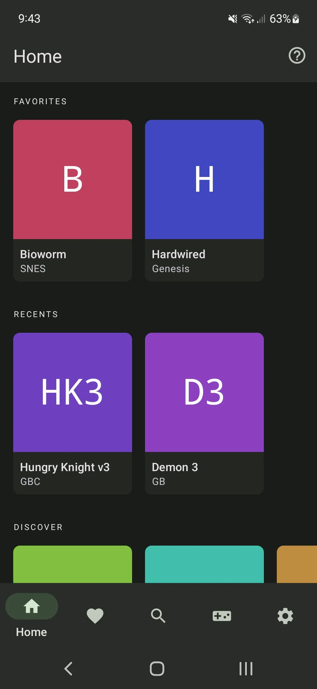
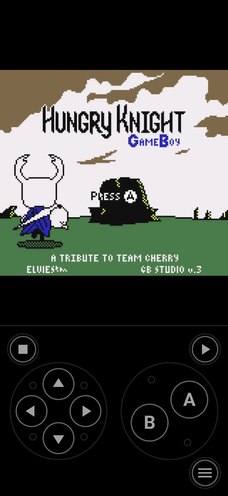

Lemuroid 老玩家避坑：五个我踩过才知道的暗礁
从纵横比误拉满屏到菜单键狂误触，从分区存储找不到 ROM 到假 APK 冒充——这些坑文档不会提前告诉你，但踩过一次就记一辈子。
写在前面
Lemuroid官网 宣传上把自己包装成"装完就能玩"的模拟器——选个 ROM、点一下，画面就出来了。我当初也是这么想的，结果前后折腾了一个礼拜才把基础体验理顺。现在回头看，那些坑其实都不难避开，只是第一次接触模拟器的人很容易凭"直觉"做出错误选择。这篇就把我踩过的几个真实坑摆出来，没一个是编的。

坑一：纵横比直接拉全屏，玩一周才发现画面变形
这是我第一个踩的，也是最难受的。刚装好 Lemuroid，打开一个 GBA 游戏，第一反应是"怎么两边黑了两条？"，想都没想就把显示模式切到了全屏拉伸。画面瞬间填满，爽了。
然后玩了三天《火焰纹章》，总觉得"这角色怎么看着怪"、"攻击范围圈不像正圆"，但又说不上来哪里不对。直到有一天切回"保持原始纵横比"对比了一下——我之前玩的所有画面都是横向被压扁的。GBA 原始是 3:2，我那台手机是 16:9，强行拉满等于把画面横向扯宽了 50%。
- 症状：圆形变椭圆、跳跃高度看着"不够劲"、游戏里所有几何图形都轻微变形
- 原因：老游戏机根本不是 16:9，Lemuroid 默认全屏拉伸但没有任何醒目提示说比例被破坏了
- 解法：打开设置 → 显示 → 画面适配，直接选保持原始纵横比。别再纠结那几条黑边，黑边不影响画面，变形是永久的体验损失
如果是平板横屏玩 PSX 或 NES，还可以选整数倍缩放——画质更好，黑边多一点但比例完全正确。
坑二：菜单键默认位置在屏幕中间，玩到高潮必误触
这个坑是在玩《街霸 2》的时候暴露的——我正跟 CPU 拼连招，突然画面一切，弹出了 Lemuroid 的存档菜单。手滑点了一下，菜单没关，又点了一下存档槽，把我之前 40 分钟的进度覆盖了。

- 症状：激烈操作时菜单键被碰到，弹出模拟器菜单，甚至误操作存档/读档
- 原因：Lemuroid 默认把菜单键放在屏幕正中央的底部区域——恰好是玩游戏时右手拇指会不自觉划到的地方
- 解法：进按键编辑模式，把菜单键直接拖到屏幕的最角落（比如右下角最边角、屏幕外面一点点），再打开"长按才能触发"开关。两条都设上之后，我至今没再误触过
顺便说一句，快进键默认放在左边缘也是这个道理。如果你习惯左手持机、右手操作，快进键建议挪到右边缘。位置全凭你自己顺手，别跟默认设置死磕。不同形态设备的推荐布局差异也挺有意思，Lemuroid文档里针对折叠屏、平板横屏、Android TV 都单独给出了参考方案。
坑三：Android 11 分区存储下，ROM 文件夹"找不到了"
我之前一直用 Android 10，内部存储随便读。换了 Android 12 的新机装 Lemuroid，打开 App 让"选择游戏目录"，系统弹出文件选择器，结果我平时放 ROM 的那个文件夹在选择器里根本看不到。
- 症状：App 里看不到任何之前在文件管理器里能正常访问的 ROM 文件夹
- 原因：Android 11 引入了分区存储，Lemuroid 不能直接扫整个内置存储——必须通过系统文件选择器让你明确指定某个文件夹。文件选择器只显示它有权限的目录，你在文件管理器里看到的某些路径，选择器里未必能看到
- 解法：进系统设置 → 存储，把 ROM 文件夹的位置确认清楚，然后打开 Lemuroid 的文件选择器，仔细翻找对应目录。如果还是找不到，最简单的办法是把 ROM 整个挪到 Lemuroid 自己生成的文档目录下——它一定有权限
另外用 SD 卡的朋友注意：SD 卡必须在系统里先挂载好，不然文件选择器里连 SD 卡的入口都没有。
坑四：分不清真假 APK，差点装上一个"解锁版"
Lemuroid 是完全免费开源的软件。但我在浏览器搜"Lemuroid 下载"的时候，前排结果里有几个第三方镜像站，标题写着"Lemuroid Pro 破解版解锁全功能"、"Lemuroid VIP 订阅版"。要不是我多看了一眼，差点就点了。
- 症状：装完 App 里有 Premium 入口、要求输入邮箱登录、弹出订阅提示
- 原因：第三方下载站故意做了带多个假下载按钮的页面，把山寨 APK 混在真链接中间
- 解法：只走两个正规渠道——Google Play 搜索 Lemuroid（开发者是 Filippo Scognamiglio），或者直接走官方下载拿 APK。任何声称有"破解版""专业版""内购"的都是假货，直接关页面
装完之后养成一个习惯：打开设置页，快速扫一遍有没有"Premium""解锁""订阅""登录"这类字样。真 Lemuroid 里不会出现这些。
坑五：快进直接拉到最大，游戏音频炸了
Lemuroid 的快进速度有五档：1.5x、2x、3x、5x、最大速度。我一开始图省事直接选"最大速度"，结果打开《口袋妖怪》，快进的时候音乐开始断断续续、人物对话音画不同步，关掉快进之后音频也乱了好一会儿才恢复。
- 症状：快进时音频爆裂、音画不同步、某些游戏快进结束后音频需要几秒才能恢复正常
- 原因：5x 以上的快进速度会让部分老游戏的音频缓冲跟不上——模拟器核心在加速执行指令，但游戏的音频通道处理不了这么快的采样率
- 解法：用 2x 或 3x 就够了，大多数 RPG 对话和加载都能跳过。真需要极端加速的时候再临时切大档位，用完立刻切回来
防坑清单（速查版）
最后整理一下，每次换设备重装 Lemuroid 按这个顺序走一遍，10 分钟就能避开上面五个坑：
- 安装只走 Google Play 或 GitHub Releases，跳过所有第三方镜像站
- 第一次打开 App 让选目录时，耐心翻文件选择器，别直接瞎点
- 设置 → 显示 → 画面适配，立刻改成"保持原始纵横比"，顺手把整数倍缩放也了解一下
- 进按键编辑模式，菜单键拖到最角落 + 打开长按触发
- 快进速度先用 2x，炸了再调低
Lemuroid 本身是一款相当扎实的模拟器，Libretro 内核的兼容性摆在那里，系统也在持续更新。这些坑其实不是 bug，更多是老玩家的惯性思维和 Android 新版本的安全机制之间的摩擦。知道这些之后，这套组合起来相当省心，我现在手机上常驻 20 多个 ROM，随手一掏就能开一局。顺带一提，这套整理出来的完整笔记我也同步放好了，在 GitHub 仓库能直接看到，国内网络走 Gitee 或 GitCode 镜像站打开更顺畅。